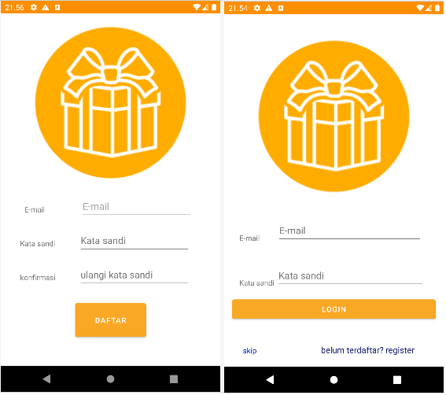
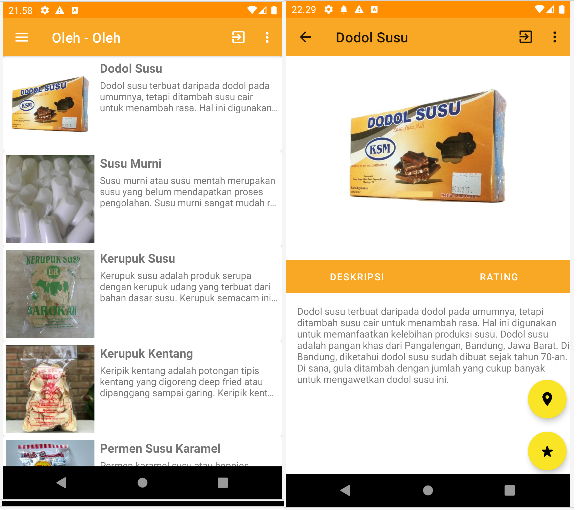
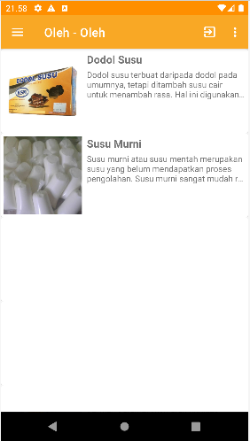
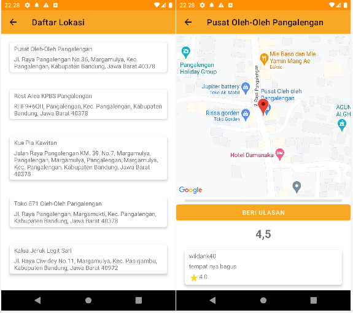
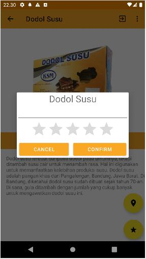
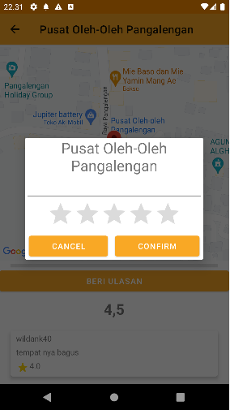

Oleh-oleh Bandung Selatan
Aplikasi Oleh-oleh Bandung Selatan merupakan aplikasi yang bertujuan untuk
memberikan informasi dan rekomendasi kepada masyarakat terkait oleh-oleh
yang ada di daerah Bandung Selatan.

Pada aplikasi ini terdapat fitur login untuk memudahkan dalam memberikan
rekomendasi
setelah login atau melewat login, pengguna akan dialihkan ke halaman
daftar oleh-oleh yang ada beserta deskripsinya

apabila pengguna login, pengguna juga bisa mendapatkan rekomendasi
berdasarkan penilaian yang telah dilakukan kepada oleh-oleh yang ada

pengguna dapat melihat lokasi mana saja yang menjual oleh-oleh yang telah
dipilih pengguna

pengguna juga dapat memberikan penilaian terhadap oleh-oleh atau lokasi
penjualannya

